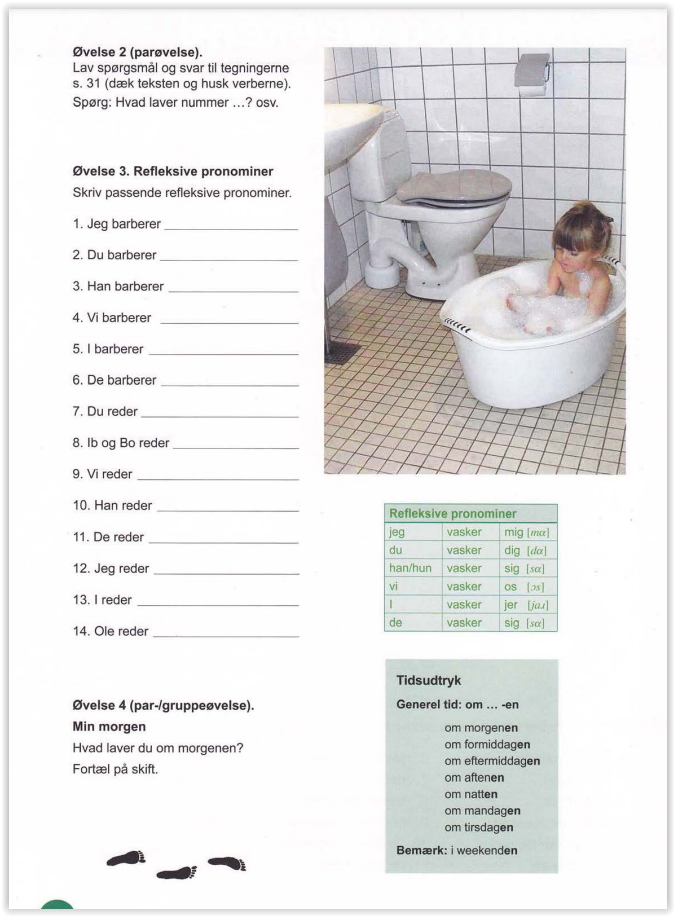

Introducing oneself
What's your name?
Where are you from?
What about you?
Introducing others
Country, nationality, and language


Age, address, telephone, and email

Sheng
Sheng comes from China.
He's 28 years old.
He's married and he lives on Saxogade together with his wife.
They live in number 19, 3rd floor on the left.
Sheng speaks Chinese and English and little Danish.
Sheng's wife is English.
Her name is Jennifer.
Sheng and Jennifer speak English together.


— Hi.
— Hi, how is it going?
— Good. How about you?
— Also good.
— Are you coming along to the cafeteria?
— Yeah, OK.
— What about you? Are you also coming?
— No, I'm staying here.
— How is it going? Is it difficult?
— Yes, it's a little difficult.
— No, it's not so difficult.
— It's very easy.
— Thanks for today.
— Thank you, too.
— See you tomorrow.
— See you on Wednesday.
— Yeah, bye!

Whose is that?
— Whose jacket is this?
— It's Maria's.
— Is this your jacket?
— No, this is not mine.
— Whose is it then?
— It's Sophy's.
— Is this your eraser?
— No, this is not mine.
— Whose is it then?
— It's Peter's or Ulla's.
— Is this Rune's book?
— No, This is not his.
— Whose is it then?
— I don't know (that). I think it's the school's (it belongs to the school).
— Is this Lone's watch?
— No, This is not hers.
— Is it Bente's?
— Yes, maybe.

Whose is that?
Friday in class
It's Friday morning. It's 9 o'clock. There's 12 students in class. There's 5 men and 7 women. There's many different nationalities. There's 2 Thais, 3 Indians, 2 English, 2 Moroccans, 1 Italian, 1 Australian, and 1 Iranian. There's no Scandinavians. The teacher is Danish.
— Are there any Vietnamese in class?
— Yes, there's 2. / No, there's none.


Introduction
Maria is Brazilian.
She's been in Denmark for 2 years and 7 months, and she speaks good Danish now.
Maria lives in Elmegade no. 31, on the left.
She's not married and she has no children, but she doesn't live alone.
She lives with a lady friend.
Maria's friend's name is Sarah.
Sarah is also Brazilian.
She's been in Denmark for only 5 months, and she doesn't understand Danish.
Sarah speaks only Portuguese.
She misses Brazil.
Time in Denmark, civil status, and children
How long have you been in Denmark?
1 year and 3 months.
Are you married?
Yes, I am.
Is your husband Danish?
No, he's not. He's Vietnamese.
Does your husband speak Danish?
Yes, he does.
Do you have children?
Yes, I do.
How many children do you have?
Two. One girl of 3,5 years old and one boy of 2. What about you? Do you have children?
No, I don't.
Kortsvar: er, har, gør
Priya
Priya is 27 years old, and she is Indian.
She's married to a Dane and lives in Jylland.
She's been in Denmark for 2 years.
Priya is a nurse, and she works at the hospital.
She loves her job.
She starts at 7 o'clock, and she finishes at 4.
She rides to work on her bicycle every day.
It takes only 20 minutes.
Priya goes to sprogskole also, because she wants to learn mor Danish.
She likes Denmark, but she doesn't like the weather in Denmark, and she hates rainy weather.

School, work, and transportation
What do you do?
I attend a language course.
What for?
Because I want to learn Danish.
Where is the school (located)?
On Valdemarsgade.
Do you have a job?
Yes, I do.
What do you do?
I work at Føtex.
What time do you start?
I start at 8 o'clock.
When do you finish?
I finish at 4 o'clock.
How do you get to school?
I take the bus.
Which bus do you take?
I take number 16 or number 5.
How long does it take?
It takes 5 minutes.
They take the train to Thisted. It takes 10 hours.
\
Carol and Tom come from Canada.
They've been in Denmark for one year.
They understand Danish, but they don't speak Danish together.
They speak in English.
They are married and they have 2 children, one boy of 4 and one pige of 3.
Their children's names are Robert and Lisa.
The family live on Nyvej in Odense.
They live at anumber 75, 3rd floor on the right.
Carol works at a computer firm. Her workplace is on Elemevej. She gets to work on her bike.
He goes to langauge school, because she wants to learn Danish.
Tom works at a restaurant. He is a cook.
He starts at 2 and finishes at 10.
His workplace is on Møllegade.
He takes the bus to work.
He takes bus number 15 or bus number 22. It takes 10 minutes.


Uffe has just a small family. His mother and father live in Spain. He doesnøt see his parents so often. But he has 2 siblings here in Denmark: a little sister and a little brother. His little brother's name is is Niels, and his little sister's name is Natasja. He also has grandmother. Her name is Marie. His grandfather is dead. Uffe visits Niels and Marie often. They live in Odense. He speaks on the phone with Natasja. She lives in Copenhagen.
Uffe is single
Uffe lives alone. He's not married, and he has no girlfriend. He lives in a house in Odense together with his dog Perle.
Natasja is a single mother
Natasja is divorced and lives with her daughter Lærke of 6. They live in an apartment in Copenhagen. Lærke's father, Natasja's ex husband, lives in Copenhagen also.
Niels is a university student
Niels studies. He studies medicine. He lives together with a friend. They live in a small apartment.
Marie is retired
Maries is 97 years old, and, of course, she doesn't work. She's a widow. Her husband, Søren, is dead. Marie lives alone now. She thinks about Søren often. She misses him.
1. university student 2. medicine 3. of course 4. ex husband 5. single 6. girlfriend 7. parents 8. grandmother (m) 9. siblings 10. retired 11. family 12. alone
Talk about your family
How many siblings does your mother/father have? How many brothers and how many sisters?
Is your grandmother (m/f) alive? How old is your grandmother (m/f)?
— A: What time is it?
— B: It's 9:30.
— A: When do you have a break?
— Teacher: We're having a break now.
— A: How long a break do we have?
— Teacher: You have one quarter - till a quarter to 10.
What time is it?
It's 8.
It's 8:15.
It's 8:30.
It's 8:45.
What time is it?
It's 10:07, 05:05, 08:53, 07:46, 11:30, 06:40, 09:13, 10:35, 11:01, 08:04, 07:15, 09:25.
oen minute* (60 seconds)
one quarter* (15 minutes)
one half hour (30 minutes)
one hour (60 minutes)
one day* (24 hours)
morning (? - 09:00)
??? (09:00 - 12:00)
afternoon (12:00 - 18:00)
evening (18:00 - 24:00)
nat (24:00 - ?)
It's 08:21
It's 08:32
What time is it?
05:27, 08:31, 06:29, 09:34, 06:22, 07:37, 09:25, 05:34, 11:28
24 hours - two systems
Digital time : Nymber from 0-24. Accurate time. Digital time indicates the 24 hours of the day exactly.
Analog time: Numbers from 0-12. Not exact time. 8 o'clock can mean 8:00 and 20:00. For precise time indication, supplement with time expressions (in the morning/at night ... ).
11:30 η ωρα - eleven thirty - half past eleven a.m.
13:00 η ωρα - thirteen hours - one o'clock p.m.
20:09 η ωρα - twenty oh nine - nine minutes past eight p.m.
01:45 η ωρα - 01 forty five - a quarter to two a.m.
12:08, 07:55, 18:10, 10:25, 16:40, 11:15, 20:32, 09:02, 02:27, 07:30
14:00, 03:05, 22:30, 16:55, 07:45, 11:00, 21:15, 01:00, 10:10, 22:50, 02:20
10:30 Klokken
15:40 Klokken
06:25 Klokken
22:30 Klokken
02:45 Klokken
Weekdays and weekend
Morning rhythm
Cover the text.
What do you do in the morning?
I wash up.
general time: in...the
in the morning
before noon
in the afternoon
in the evening
at night
on Monday
on Thursday
on/in the weekend
on Monday (next Monday)
on Mondays (in general)

Thomas' morning
It's Monday morning.
It's seven o'clock and the alarm clock goes off.
Thomas wakes up and gets up.
He always gets up at 7 o'clock.
He's not brisk but he has to go to work.
Thomas is always tired in the morning.
He's the B-type.
Thomas takes a shower, and he dresses up.
It's a quarter past 7 now.
Thomas goes to the kitchen and has breakfast.
He doesn't eat so much, because he's never hungry in the morning.
He only eats a piece of bread with cheese, and he drinks a cup of tea.
Thomas never drinks coffee.
He doesn't like coffee, but he likes tea.
Thomas also lestens to the radio.
He listens to the news in the morning.